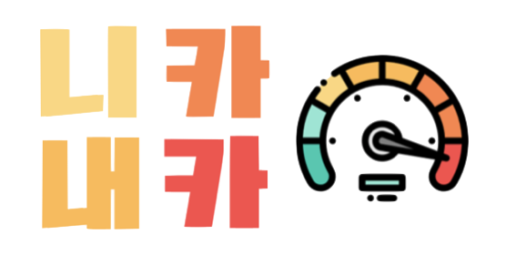
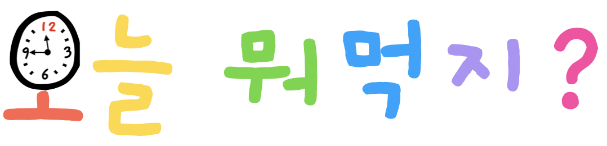
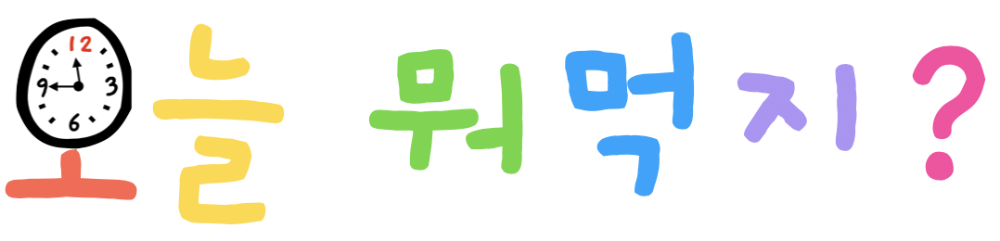

Jihye Oh
Always Think 'Why'
🌈 About Jihye
한화생명 드림하우스 하우어
트위그팜 인공지능 자연어처리 개발자
 B.A. Yonsei University International Studies Business and Economics
B.A. Yonsei University International Studies Business and Economics
Samsung SDS Multicampus Big Data Platform Using Open API
 Project Leader
Project Leader
 Starbucks Partner
Starbucks Partner
Yoga Instructor
UX Designer
Developer - Front/Back End
Language - 🇰🇷🇺🇸🇯🇵🇨🇳
Based on Seoul, Seattle, New York